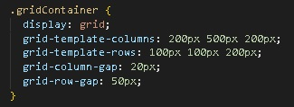

CSS

grid-template: 100px 100px 200px / 200px 500px 200px
grid-gap: 50px 20px
.обращаемся к селектору {
определяем его - display: grid;
мы создаем колонки (3шт и даем размер ширины колонки)
определяем ряды (3шт и даем размер высоты ряда)
отступы между колонками (по 20рх)
отступы между рядами (по 50 рх)
}
Мы видим, что контейнер не полностью заполнился,
тк дали колонкам фиксированые размеры